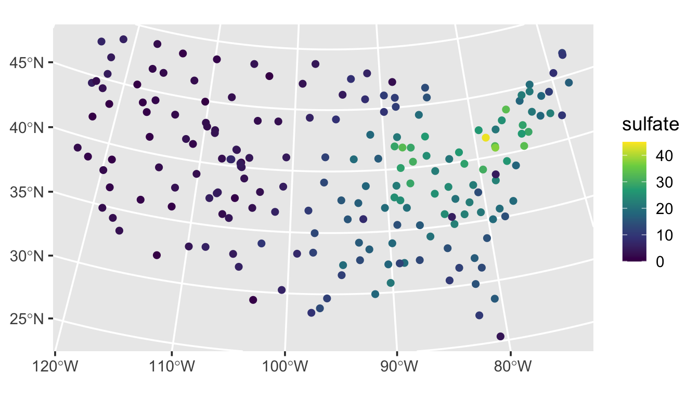
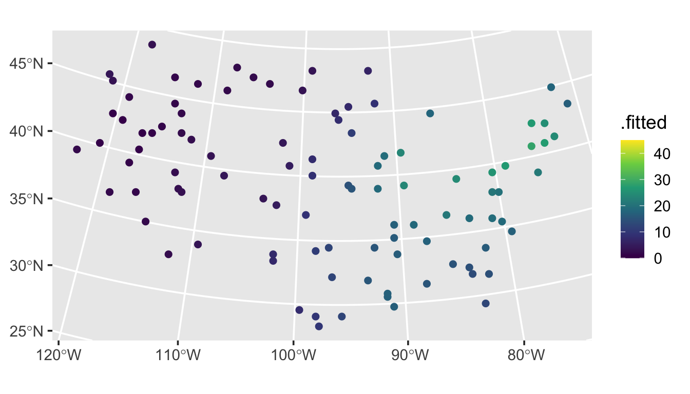

1 The Basics
Throughout this section, we practice using some of the the main spmodel features to fit spatial linear models, inspect model fit, and make predictions (i.e., Kriging). We will use the spmodel package and ggplot2 package:
Goals:
- Fit a spatial linear model using
splm(). - Tidy, glance at, and augment the fitted model.
- Predict for unobserved locations (i.e., Kriging).
1.1 Fit a Spatial Linear Model
A spatial linear model is a statistical linear model that incorporates spatial covariance among neighboring observations. Formally incorporating this spatial covariance generally yields models that more realistically represent spatial processes.
The sulfate data in spmodel contains data on 197 sulfate measurements in the conterminous United States. We visualize the sulfate measurements by running
ggplot(sulfate, aes(color = sulfate)) +
geom_sf(size = 2) +
scale_color_viridis_c(limits = c(0, 45)) +
theme_gray(base_size = 14)
We fit a spatial linear model with an intercept by running
spmod <- splm(sulfate ~ 1, data = sulfate, spcov_type = "exponential")The summary of spmod contains several useful pieces of information we will discuss in more detail in Chapter 3:
summary(spmod)
#>
#> Call:
#> splm(formula = sulfate ~ 1, data = sulfate, spcov_type = "exponential")
#>
#> Residuals:
#> Min 1Q Median 3Q Max
#> -5.738 -2.605 4.900 13.323 38.099
#>
#> Coefficients (fixed):
#> Estimate Std. Error z value Pr(>|z|)
#> (Intercept) 5.924 6.529 0.907 0.364
#>
#> Coefficients (exponential spatial covariance):
#> de ie range
#> 85.8 10.4 3105165.7
1.2 Meet the broom functions: tidy(), glance(), and augment()
The tidy(), glance(), and augment() functions popularized by the broom package (Robinson, Hayes, and Couch 2021) provide convenient tools for inspecting model fit. The tidy() function tidies the fixed effect model output into a tibble (i.e., a special data.frame()):
tidy(spmod)
#> # A tibble: 1 × 5
#> term estimate std.error statistic p.value
#> <chr> <dbl> <dbl> <dbl> <dbl>
#> 1 (Intercept) 5.92 6.53 0.907 0.364The glance() function glances at the model fit:
glance(spmod)
#> # A tibble: 1 × 9
#> n p npar value AIC AICc logLik deviance pseudo.r.squared
#> <int> <dbl> <int> <dbl> <dbl> <dbl> <dbl> <dbl> <dbl>
#> 1 197 1 3 1140. 1146. 1146. -570. 196. 0And the augment() function augments the data used to fit the model with diagnostics:
augment(spmod)
#> Simple feature collection with 197 features and 6 fields
#> Geometry type: POINT
#> Dimension: XY
#> Bounding box: xmin: -2292550 ymin: 386181.1 xmax: 2173345 ymax: 3090370
#> Projected CRS: NAD83 / Conus Albers
#> # A tibble: 197 × 7
#> sulfate .fitted .resid .hat .cooksd .std.resid geometry
#> * <dbl> <dbl> <dbl> <dbl> <dbl> <dbl> <POINT [m]>
#> 1 12.9 5.92 7.00 0.00334 1.61e-3 -0.694 (817738.8 1080571)
#> 2 20.2 5.92 14.2 0.00256 1.92e-3 0.865 (914593.6 1295545)
#> 3 16.8 5.92 10.9 0.00259 3.95e-4 0.390 (359574.1 1178228)
#> 4 16.2 5.92 10.3 0.00239 3.63e-4 0.390 (265331.9 1239089)
#> 5 7.86 5.92 1.93 0.00202 8.71e-3 -2.07 (304528.8 1453636)
#> 6 15.4 5.92 9.43 0.00201 2.40e-4 0.345 (162932.8 1451625)
#> # ℹ 191 more rows1.3 Prediction
The sulfate_preds data in spmodel contains 100 locations at which to predict sulfate. We obtain these predictions by running
predict(spmod, newdata = sulfate_preds)The augment() function can also be used to augment prediction data with predictions:
aug_preds <- augment(spmod, newdata = sulfate_preds)
print(aug_preds)
#> Simple feature collection with 100 features and 1 field
#> Geometry type: POINT
#> Dimension: XY
#> Bounding box: xmin: -2283774 ymin: 582930.5 xmax: 1985906 ymax: 3037173
#> Projected CRS: NAD83 / Conus Albers
#> # A tibble: 100 × 2
#> .fitted geometry
#> * <dbl> <POINT [m]>
#> 1 1.62 (-1771413 1752976)
#> 2 24.4 (1018112 1867127)
#> 3 8.95 (-291256.8 1553212)
#> 4 16.5 (1274293 1267835)
#> 5 4.93 (-547437.6 1638825)
#> 6 26.8 (1445080 1981278)
#> # ℹ 94 more rowsThese predictions are then readily visualized:
ggplot(aug_preds, aes(color = .fitted)) +
geom_sf(size = 2) +
scale_color_viridis_c(limits = c(0, 45)) +
theme_gray(base_size = 14)
They follow a similar pattern as the observed data.
1.4 R Code Appendix
library(spmodel)
library(ggplot2)
ggplot(sulfate, aes(color = sulfate)) +
geom_sf(size = 2) +
scale_color_viridis_c(limits = c(0, 45)) +
theme_gray(base_size = 14)
spmod <- splm(sulfate ~ 1, data = sulfate, spcov_type = "exponential")
summary(spmod)
tidy(spmod)
glance(spmod)
augment(spmod)
predict(spmod, newdata = sulfate_preds)
aug_preds <- augment(spmod, newdata = sulfate_preds)
print(aug_preds)
ggplot(aug_preds, aes(color = .fitted)) +
geom_sf(size = 2) +
scale_color_viridis_c(limits = c(0, 45)) +
theme_gray(base_size = 14)